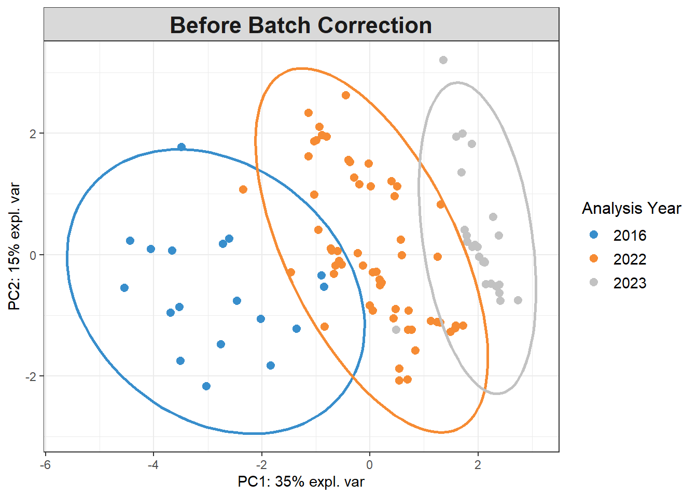
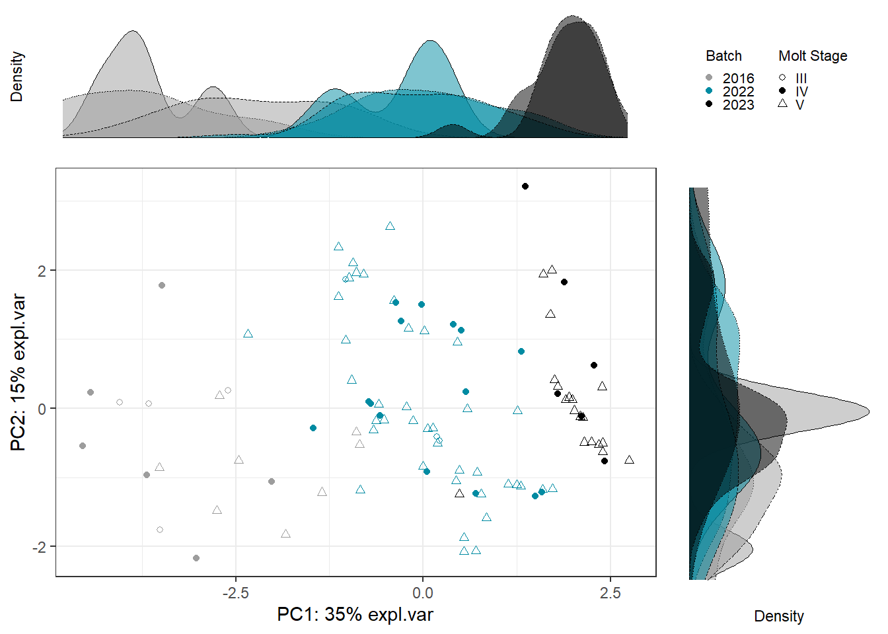

4 Molt stage ~ cytokines
4.2 Data
cyto <-
read.csv("Output Files/cleaned_cytokine.csv")
cytobin <-
read.csv("Output Files/cleaned_cytokine_bin.csv")
meta <-
read.csv("Output Files/metadata_cyto.csv") %>%
mutate(iav=gsub("neg", "IAV-", iav),
iav=gsub("pos", "IAV+", iav))
# Merge cytokine & metadata, filter NAs
data <-
merge(cyto, meta, by="Sample") %>%
filter(!is.na(molt.stage))
databin <-
merge(cytobin, meta, by="Sample") %>%
filter(!is.na(molt.stage))4.3 PERMANOVA
4.3.1 Cytokine Presence/Absence
From McCosker et al. 2024:
- A dissimilarity matrix was then created using betadiver from package vegan (v. 2.5-4; Oksanen et al.
- with dissimilarity defined as 1 – Sørensen’s index (Sørensen 1948).
R2 = partial R2 = factor (molt stage) is explaining at least R2 * 100% of variation in variables (cytokines) #### Create similarity matrix (Sorensen) Dissimilarity = 1-Sorensen

# Dissimilarity summary stats
mean(1-databin_dist); min(1-databin_dist); max(1-databin_dist); median(1-databin_dist)## [1] 0.4074827## [1] 0## [1] 0.8## [1] 0.42857144.3.1.1 Run PERMANOVA
Use restricted permutation test - data are not exchangeable between analysis years so permute within groups defined by strata.
Ref: https://stats.stackexchange.com/questions/590510/repeated-measures-permanova-nowhere-to-find
** Not sig
# define permutations & strata
permute_databin <-
how(plots=Plots(strata=databin$analysis.year, type="none"), nperm=4999)
# run permanova
adonis2((1-databin_dist) ~ molt.stage,
data=databin,
permutations=permute_databin)## Permutation test for adonis under reduced model
## Plots: databin$analysis.year, plot permutation: none
## Permutation: free
## Number of permutations: 4999
##
## adonis2(formula = (1 - databin_dist) ~ molt.stage, data = databin, permutations = permute_databin)
## Df SumOfSqs R2 F Pr(>F)
## Model 2 0.5670 0.05584 2.8981 0.1898
## Residual 98 9.5871 0.94416
## Total 100 10.1542 1.000004.3.1.2 Homogeneity of group dispersions
** Not sig
## Analysis of Variance Table
##
## Response: Distances
## Df Sum Sq Mean Sq F value Pr(>F)
## Groups 2 0.03426 0.0171281 2.1356 0.1236
## Residuals 98 0.78600 0.0080204
4.3.1.3 Visualization
Principal Coordinates Analysis
Spider plot illustrating group dissimilarity and group centroid locations (molt stage) using presence/absence data to compare cytokine detections across molt stages.
# Use 1 - Sorensen's for dissimilarity
databin_pco <- cmdscale(1-databin_dist, eig=TRUE)
plot(databin_pco$points, type="n",
cex.lab=1.5, cex.axis=1.1, cex.sub=1.1)
ordiellipse(ord = databin_pco,
groups = factor(data$molt.stage),
display = "sites",
col = c("deepskyblue", "grey", "darkseagreen"),
lwd = 2,
label = TRUE)
ordispider(ord = databin_pco,
groups = factor(data$molt.stage),
display = "sites",
col = c("deepskyblue", "grey", "darkseagreen"),
lwd=2,
label=TRUE)
4.3.2 Cytokine Concentration
From McCosker et al. 2024:
- The adonis function was used to conduct a permutational multivariate analysis of variance (PERMANOVA) on group (method) dissimilarity. Group dispersions weremodeled with betadisper to determine whether the assumption of equal dispersions had been met under adonis and principal coordinate analysis was used relative to PERMANOVA results to visualize group dispersions around the centroid.
- Bray-Curtis dissimilarity used
- well-suited to species abundance because it ignores variables that have zeros for both objects (joint absences)
4.3.2.2 Run PERMANOVA
** Not sig
# define permutations & strata
permute_data <-
how(plots=Plots(strata=data$analysis.year, type="none"), nperm=4999)
# run permanova
adonis2(data_dist ~ molt.stage,
data=data,
permutations=permute_data)## Permutation test for adonis under reduced model
## Plots: data$analysis.year, plot permutation: none
## Permutation: free
## Number of permutations: 4999
##
## adonis2(formula = data_dist ~ molt.stage, data = data, permutations = permute_data)
## Df SumOfSqs R2 F Pr(>F)
## Model 2 0.8057 0.04864 2.5052 0.171
## Residual 98 15.7595 0.95136
## Total 100 16.5653 1.000004.3.2.3 Homogeneity of group dispersions
** Not sig
## Analysis of Variance Table
##
## Response: Distances
## Df Sum Sq Mean Sq F value Pr(>F)
## Groups 2 0.08565 0.042826 1.636 0.2
## Residuals 98 2.56532 0.026177
4.3.2.4 Visualization
# Use Bray-Curtis dissimilarity matrix
data_pco <- cmdscale(data_dist, eig=TRUE)
plot(data_pco$points, type="n",
cex.lab=1.5, cex.axis=1.1, cex.sub=1.1)
ordiellipse(ord = data_pco,
groups = factor(data$molt.stage),
display = "sites",
col = c("deepskyblue", "grey", "darkseagreen"),
lwd = 2,
label = TRUE)
ordispider(ord = data_pco,
groups = factor(data$molt.stage),
display = "sites",
col = c("deepskyblue", "grey", "darkseagreen"),
lwd=2,
label=TRUE)
4.4 Cytokine Importance
The default splitting method for classification is gini index. Optional parameters:
- minbucket: smallest # observations allowed in terminal node. Small terminal nodes likely to be biased by single outlier.
- minsplit: smallest # observations in the parent node that can be further split. Default=20.
- maxdepth: prevents tree from growing past certain depth/height. Default=30.
- cp: complexity pararmeter: minimum improvement in the model needed at each node. Based on the cost complexity of the model (measures mis-classification rate of potential branches). Small cp will allow for more complex models.
- changing cp from default to 0.001 does not change tree*
Cross Validation
- split training set in 2+ parttitions & creating model for each partition. Partition acts as validation set, and remaining set is training data. Common form is k-fold:
- The models are always trained on k - 1 of the folds, with the remaining fold being used as test data; this process is repeated until each fold has acted exactly once as test set.
Classification Ability
ROC AUC (range 0-1)
- 0.5 = random guessing
- 1 = indicates perfect performance
- A score slightly above 0.5 shows that a model has at least “some” (albeit small) predictive power. This is generally inadequate for any real applications.
- 0.5 = random guessing
Classification Error
- compares observed to predicted classifications
- range from 0-1, with smaller numbers = less error, better model
- compares observed to predicted classifications
Resources:
4.4.2 Cross Validation
# Creating task and learner
task <- as_task_classif(molt.stage ~ .,
data = data_cart)
task <- task$set_col_roles(cols="molt.stage",
add_to="stratum")
# min molt stage group = 7
learner <- lrn("classif.rpart",
predict_type = "prob",
maxdepth = to_tune(2, 5),
minbucket = to_tune(1, 7),
minsplit = to_tune(1, 30)
)
# Define tuning instance - info ~ tuning process
instance <- ti(task = task,
learner = learner,
resampling = rsmp("cv", folds = 10),
measures = msr("classif.ce"),
terminator = trm("none")
)
# Define how to tune the model
tuner <- tnr("grid_search",
batch_size = 10
)
# Trigger the tuning process
#tuner$optimize(instance)
# optimal values:
# maxdepth = 2
# minbucket = 5
# minsplit = 1
# classif.ce = 0.29545454.4.3 Run CART
Leaves out molt stage III - too few samples for CART alogrithm
cart_model <- rpart(formula=molt.stage ~ .,
data=data_cart,
method="class",
maxdepth=2,
minbucket=5,
minsplit=1)
# plot optimized tree
rpart.plot(cart_model)
## IL.8 IL.15 IL.18 IL.7 KC.like IL.10 IL.2
## 5.5106593 2.7942829 1.8907636 1.2326007 1.2326007 0.9872443 0.82173384.4.4 Plot
4.4.4.1 Variable Importance
varimp <-
data.frame(imp=cart_model$variable.importance) %>%
rownames_to_column() %>%
rename("variable" = rowname) %>%
arrange(imp) %>%
mutate(variable=gsub("\\.","-",variable),
variable = forcats::fct_inorder(variable))
varimp_plot <-
ggplot(varimp) +
geom_segment(aes(x = variable,
y = 0,
xend = variable,
yend = imp),
linewidth = 0.5,
alpha = 0.7) +
geom_point(aes(x = variable,
y = imp),
size = 1,
show.legend = F,
col="black") +
labs(x="Cytokine",
y="Variable Importance") +
coord_flip() +
theme_classic() +
theme(text=element_text(size=10, color="black"))4.4.4.2 Proportions
##
## 0 1
## III 57.142857 42.857143
## IV 74.074074 25.925926
## V 95.522388 4.477612il8_prop <-
databin %>%
mutate(IL.8=gsub("1", "Present", IL.8),
IL.8=gsub("0", "Absent", IL.8),
IL.8=factor(IL.8, levels=c("Present", "Absent"))) %>%
ggplot(data=.) +
geom_mosaic(aes(x=product(IL.8,molt.stage), fill=IL.8)) +
scale_fill_manual(values=c("Present"="gray60", "Absent"="lightgray"),
name="Cytokine") +
scale_y_continuous(labels = scales::percent) +
labs(y="Proportion of Samples") +
theme_bw() +
theme(panel.grid.major = element_blank(),
panel.grid.minor = element_blank(),
axis.title.x = element_blank(),
legend.position="bottom",
text = element_text(size=10),
plot.title = element_text(hjust = 0.5))
cyto_leg <-
get_legend(il8_prop)
il8_prop <-
il8_prop +
theme(legend.position="none")4.4.4.3 Concentration
il8 <-
data %>%
select(molt.stage, IL.8) %>%
filter(!IL.8==0) %>%
ggplot(., aes(x=molt.stage, y=log(IL.8))) +
geom_boxplot(color="black", fill="gray60", lwd=0.25,
outliers=FALSE) +
geom_point(size=0.75, position=position_jitter(width=0.2)) +
labs(x=NULL, y="log(Concentration (pg/mL))") +
stat_n_text(size=3) +
theme_classic() +
theme(text = element_text(size=10),
panel.border=element_rect(color="black", fill=NA, linewidth=0.5))
il8
4.4.4.4 Combine
bottom1 <- grid.arrange(il8_prop, il8, ncol=2,
left=textGrob("IL-8", rot=90, gp=gpar(fontsize=10)),
bottom=textGrob("Molt Stage", gp=gpar(fontsize=10)))

jpeg("Figures/cytoimportance_molt.jpeg", width=6, height=6, units="in", res=300)
all <- grid.arrange(varimp_plot, bottom2,
ncol=1, heights=c(1,1.5))
grid.polygon(x=c(0, 0, 1, 1),
y=c(0, 0.6, 0.6, 0),
gp=gpar(fill=NA))
grid.polygon(x=c(0.02, 0.02, 0.97, 0.97),
y=c(0.94, 0.98, 0.98, 0.94),
gp=gpar(fill=NA))
dev.off()## png
## 24.5 PLS-DA
PLSDA is a supervised dimensionality reduction method that is similar to PCA but incorporates class labels to maximize the separation between groups.
One advantage of PLS is that it has fewer assumptions and hence it can use predictor variables that are collinear and not independent.
The aim of PLS-DA is to discriminate the sample groups, rather than maximizing the variance. When the maximization of the variance corresponds to a discrimination of the classes, then this is awesome, but otherwise, it means that the major source of variation is probably not mainly due to the sample group differences.
4.5.2 Transform data
CLR = Centered log-ratio transformation. Recommended to offset by 0.01 for not count data.
4.5.3 Detect batch effects
Reference: https://evayiwenwang.github.io/PLSDAbatch_workflow/
# Data is already centered and scaled
pca_before <-
mixOmics::pca(pls_x_clr, scale = TRUE)
plotIndiv(pca_before,
group=data$analysis.year,
pch=20,
legend = TRUE, legend.title = "Analysis Year",
title = "Before Batch Correction",
ellipse = TRUE, ellipse.level=0.95)
Scatter_Density(object = pca_before,
batch = pls_y$analysis.year,
trt = pls_y$molt.stage,
trt.legend.title = "Molt Stage",
color.set = c("#9d9d9d","#008ba2","black"))
4.5.3.1 Estimate # variable components
Use PLSDA from mixOmics with only treatment to choose number of treatment components to preserve.
Number = that explains 100% of variance in outcome matrix Y.
## $X
## comp1 comp2 comp3 comp4 comp5 comp6 comp7
## 0.34144522 0.10980084 0.09993398 0.10541846 0.11465624 0.05968881 0.05563208
## comp8 comp9
## 0.11342437 0.28604842
##
## $Y
## comp1 comp2 comp3 comp4 comp5 comp6 comp7 comp8
## 0.5651181 0.5769380 0.4893633 0.3781354 0.4463609 0.4593401 0.4117105 0.3397278
## comp9
## 0.4377663## [1] 1.1420564.5.3.2 Estimate # batch components
Use PLSDA_batch with both treatment and batch to estimate optimal number of batch components to remove.
For ncomp.trt, use # components found above. Samples are not balanced across batches x treatment, using balance = FALSE.
Choose # that explains 100% variance in outcome matrix Y.
batch_comp <-
PLSDA_batch(X = pls_x_clr,
Y = pls_y$molt.stage,
Y.bat = pls_y$analysis.year,
balance = FALSE,
ncomp.trt = 2, ncomp.bat = 9)
batch_comp$explained_variance.bat## $X
## comp1 comp2 comp3 comp4 comp5 comp6 comp7
## 0.43328458 0.14843254 0.12817326 0.13796223 0.12161687 0.03053052 0.02804873
## comp8 comp9
## 0.26385878 0.09309684
##
## $Y
## comp1 comp2 comp3 comp4 comp5 comp6 comp7
## 0.41768027 0.50853928 0.07378045 0.27135218 0.28540956 0.43428019 0.28194251
## comp8 comp9
## 0.17517309 0.51327584## [1] 1
4.5.4 PLSDA on Batch-Corrected Data
plsda_model <-
plsda(data_batch,
pls_y$molt.stage,
scale=TRUE)
plotIndiv(plsda_model,
group=pls_y$molt.stage,
pch=20,
legend = TRUE, legend.title = "Molt Stage",
ellipse = TRUE, ellipse.level = 0.95)
4.5.5 Visualization
4.5.5.3 Plot
molt_plsda_ggplot <-
ggplot(plsda_ggplot,
aes(x=x,
y=y,
col=molt.stage)) +
geom_point() +
stat_ellipse() +
labs(x=labelx,
y = labely,
name="Molt Stage") +
scale_color_manual("Molt Stage",
values=c("#9d9d9d","#008ba2","black")) +
theme_bw() +
theme(panel.grid=element_blank())
molt_plsda_ggplot
4.5.6 Cytokine Contributions
plsda_loadings <-
plsda_model$loadings$X %>%
data.frame() %>%
select(1:2) %>%
arrange(comp1)
plsda_loadings## comp1 comp2
## IL.6 -0.5372555 0.2463576
## KC.like -0.4008796 0.2884797
## IFNg -0.3582923 -0.1403574
## IL.18 -0.2108991 -0.3431369
## IL.10 -0.0410525 -0.2741466
## IL.15 0.2214703 -0.1629127
## IL.7 0.2560667 -0.5443105
## IL.2 0.2789856 0.3151259
## IL.8 0.4285589 0.4704988